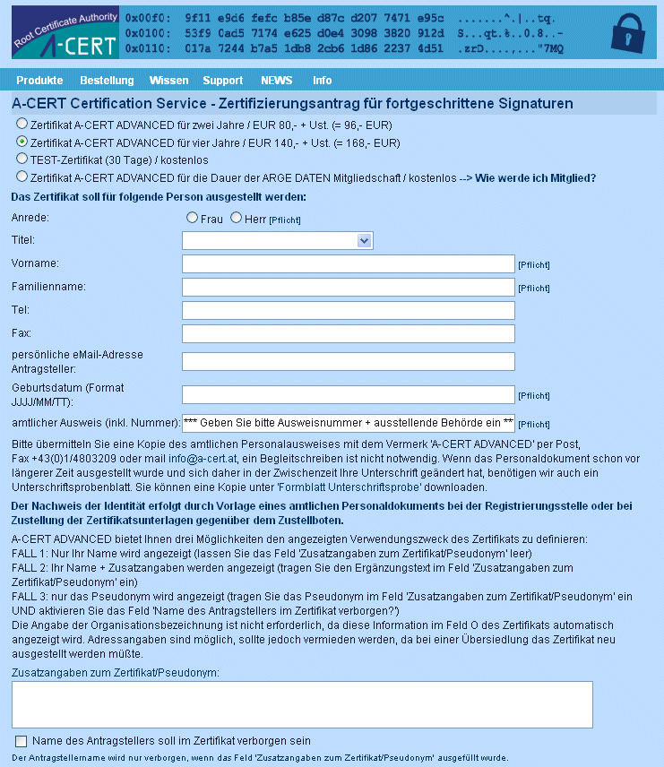
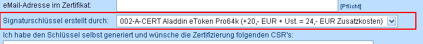
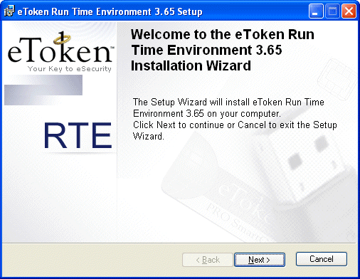
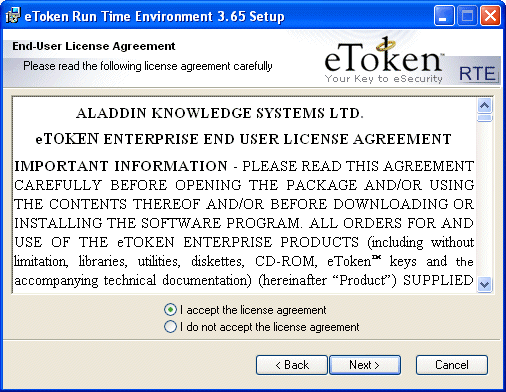
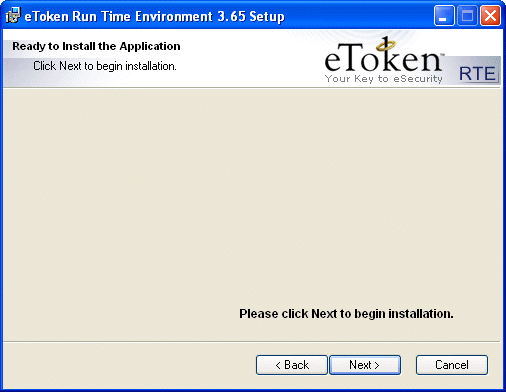
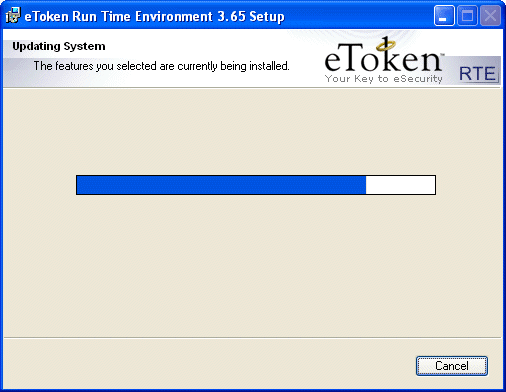
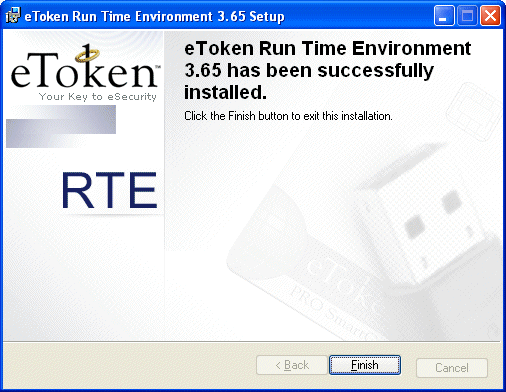
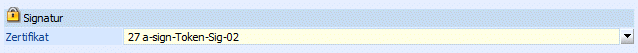
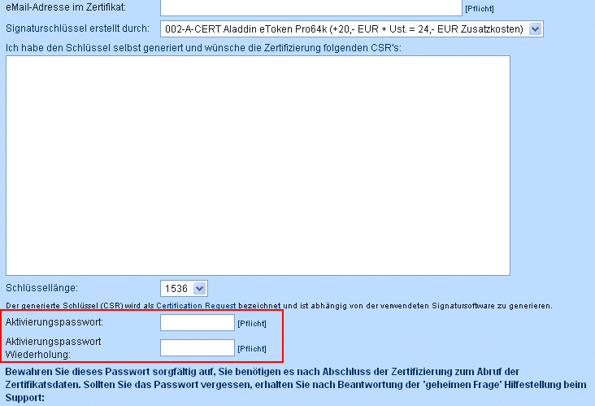

Zertifikate für elektronisch signierte Rechnungen
Verschiedene Zertifizierungsdiensteanbieter bieten Zertifikate für fortgeschrittene elektronische Signaturen an. Zertifizierungsdienste, die laut Sicherheits- und Zertifizierungskonzept für fortgeschrittene elektronische Signaturen geeignet sind, sind in der von der RTR-GmbH (Rundfunk & Telekom Regulierungs-GmbH) erfasst.
Wenn die Rechnungslegung einschließlich Auslösung der Signaturfunktion automatisiert ablaufen soll, ist die sichere elektronische Signatur, wegen der hierfür erforderlichen PIN-Eingabe, ungeeignet; jedoch verwendbar (es muss dazu nur bei der Rechnung die signiert werden soll der PIN angegeben werden). Es ist jedoch zulässig mit nur einer PIN-Eingabe eine bestimmte Anzahl bereits vorliegender Rechnungen simultan mit sicheren elektronischen Signaturen zu versehen.
In jedem Fall können Zertifikate nur an natürliche Personen ausgestellt werden weil das Signaturgesetz nur natürliche Personen als Signatoren vorsieht. Die Verwendung eines Pseudonyms im Zertifikat ist jedoch zulässig (speziell beim qualifizierten Zertifikat ist jedoch § 8 Abs. 4 SigG zu beachten, dem zufolge bei Verwendung eines Pseudonyms keine Verwechslungsgefahr mit Namen oder Kennzeichen bestehen darf).
Bestellung eines Zertifikates/Hardware
Über folgenden LINK gelangt man in den "A-CERT Certification Service - Zertifizierungsantrag für fortgeschrittene Signaturen" wo man Zertifikate - z.B. A-CERT-Advanced-Zertifikate - bestellen kann:
https://secure.a-cert.at/session/728816wottsz41882920060621093605.942_INP.html

Weiters kann auf dieser Seite auch die erforderliche Hardware (Signaturschlüssel) - z.B. der "Aladdin eToken" bestellt werden:

Die Software die benötigt wird um den eToken zu installieren kann über folgenden LINK geholt werden:
ftp://ftp.ealaddin.com/pub/etoken/enterprise/RTE_3_65.msi
Wird diese Datei ausgeführt so gelangt man in einen Wizard der durch die einzelnen Installationsschritte führt:

Erster Schritt muss mit "Next" bestätigt werden.

Im zweiten Schritt müssen die Lizenzbestimmungen akzeptiert werden und der Button "Next" gewählt werden.

In diesem Schritt wird die Installation gestartet sobald auf "Next" geklickt wird.

Installationsvorgang ….

Um die Installation abzuschließen muss der Button "Finish" gewählt werden.
Nachdem der eToken auf dem PC installiert wurde kann das Zertifikat bereits verwendet werden:

Hinweis:
Bei der Bestellung des eTokens (auf der Seite von A-CERT) muss das Passwort bereits vergeben werden. Dieses Passwort wird in weiterer Folge zum Signieren der Belege benötigt.
